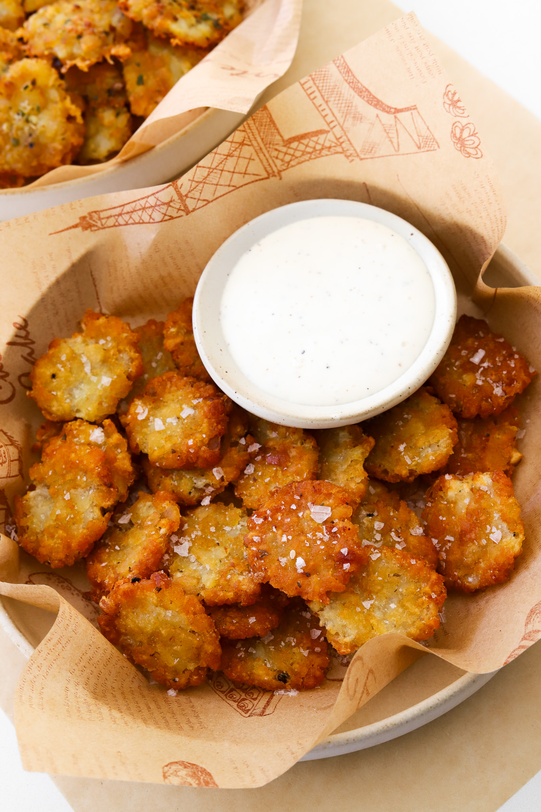
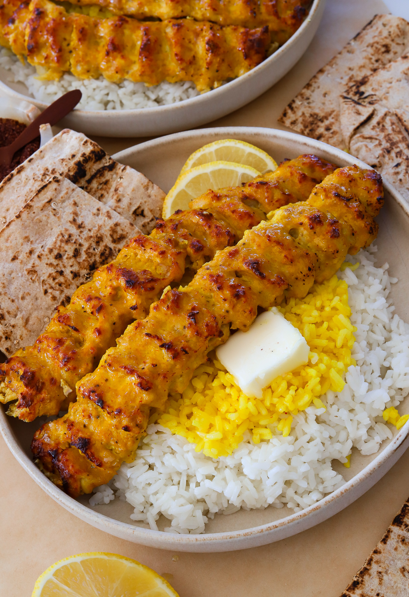

Moribyan
Smashed Tater Tots
Perp Time 5 mins
Cook Time 25 mins
Total Time 30 mins
Yields 4

Ingredients
Tater Tots
- 20 to 30 frozen tater tots
- Avocado oil spray or melted unsalted butter
- Salt, to garnish
GARLIC BUTTER, OPTIONAL
- 1/4 cup unsalted butter, melted
- 1 tablespoon parsley, finely chopped
- 1/2 tablespoon garlic, minced
- 2 tablespoons parmesan, grated
- 1/4 teaspoon salt, or to taste
- 1/8 teaspoon black pepper
- 1/8 teaspoon dried oregano
Instructions
Mark The Garlic Butter
-
In a small bowl, mix butter with parsley, garlic, parmesan,
salt, black pepper, and oregano.
Make The Smashed Tater Tots
- Preheat the oven to 425°F.
-
Add taters to a nonstick baking tray, spacing them apart a
little.
- Bake in the oven for 9 to 10 minutes.
-
Take out of the oven and brush the tater tots lightly with a bit
of butter. Alternatively you can spray them with oil or leave
as is.
-
Use a flat glass cup to mash the tater tots but don't smash them
down all the way.
-
Pop back in the oven and bake for 10 to 15 minutes more until
golden and crispy all around.
- Take out of the oven, sprinkle sea salt, and serve warm!
Moribyan
Butter Chicken Nachos
Perp Time 15 mins
Cook Time 15 mins
Total Time 30 mins
Yields 6 to 8
Ingredients
- 2 cups butter chicken
- 4 garlic naans
- 1/3 cup plain yoghurt
- 1/3 cup diced red onion
- 1/4 cup chopped cilantro
- 1 jalapeño, thinly sliced
- 1/2 cup Monterrey jack cheese, optional
Instructions
- Preheat oven to 350°F.
-
Cut the garlic naan into triangular pieces so it resembles
tortilla chips.
-
Transfer to a baking tray lined with parchment paper and bake
for 10 to 12 minutes until golden on the edges and crispy.
-
Take out the oven and add butter chicken on top. If adding
cheese, do it at this step and then pop it back in the oven for
4 to 5 minutes just until the cheese is melted.
-
Garnish with yogurt, cilantro, red onion, and jalapeno to enjoy!
Moribyan
Chicken Koobideh
Perp Time 1 Hour
Cook Time 25 mins
Total Time 1 Hour 30 mins
Yields 7ck to 8

Ingredients
- 2 pounds ground chicken
- 1 teaspoon saffron, crushed
- 1/4 cup ice cubes
- 1 whole yellow onion, grated and drained
- 1 tablespoon garlic, finely minced
- 1/2 tablespoon coriander
- 1/4 teaspoon turmeric
- 1 teaspoon black pepper
- 1/2 tablespoon salt
- 1/2 tablespoon smoked paprika
Instructions
-
Crush the saffron in a bowl and add a small handful of ice
cubes. Allow the ice to melt and steep the saffron until the ice
is fully melted.
-
To a bowl, add the grated onion, garlic, saffron water,
coriander, turmeric, black pepper, salt, and smoked paprika. Mix
together.
- Add the ground chicken to a large bowl and add the marinade. Mix
together well until combined.
- Preheat oven to 450°F.
-
Shape the seasoned ground chicken onto the skewers and elongate
them so each kebab is about 8 to 12 inches long. It depends on
you to make them as short or as long as you want.
-
Then use one hand starting at the top to press down using your
thumb while pinching the rest of your fingers on the side to
create little bumps along the kabob. Repeat this motion moving
all the way down. Repeat with the rest of the chicken.
- Place on a tray that is lined with parchment paper.
-
Bake in the oven for 13 to 15 minutes until cooked through and
has a char.
-
Change the oven setting to broil for a few minutes at the end to
get the top a bit charred for that BBQ effect if needed.
- Serve with basmati rice, sumac, and butter to enjoy!